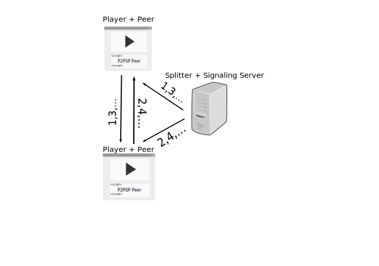

IPTV using P2PSP and HTML5+WebRTC
Cristóbal Medina-López, Juan Pablo García Ortiz and
J. A. M. Naranjo

L. G. Casado and Vicente González-Ruiz
Department of Informatics, University of Almería, Spain


URL of these Slides
http://www.p2psp.org/slides/Web-TV-Convergence-2014
What is IPTV?
ITU-T's
(adapted) definition: “IPTV is defined as
multimedia services (such as
television/video/audio/text/graphics/data) delivered
over IP based networks managed to provide the required
level of quality of experience
(reliability, delay, interactivity,
etc.) and security
(integrity, pay-per-view,
etc.).”
Network models for IPTV
Service models for IPTV over Unicast
Notice that, unlike the Client/Server Model, the P2P Model takes advantage of the Clients's (Peers) bandwidth!

-
P2PSP (Peer to Peer
"Straightforward" Protocol) is an open
(non-propietary)
application-layer protocol for the real-time
streaming of media content between networked
entities (Peers).
-
An open-source
(GNU
GPL v3) implementation is available
at
Lauchpad.
P2PSP vs. Client/Server Architecture
-
Notice that:
- The P2PSP's Splitter node (S in red) only sends a copy of the stream regardless of the number of Peers (P). In a C/S system, the Server (S in green) sends as many copies as Clients (C).
- If a link or a Peer fails in a P2PSP team, the lost chunks are dispersed in time. Therefore, signal interpolation could be efficiently used to hide to the users this lost of information.
What is ?
?
W3C's
definition:“HTML5 is the cornerstone of the
W3C's open Web platform; a framework designed to support
innovation and foster the full potential the Web has to
offer.”
One of the key advances is
the
HTML <video> tag, which
provides the playback of a stream of a video without third
party software.
What is  ?
?
Googl'es
definition: “WebRTC is a free, open project
that enables Web browsers with Real-Time Communications
(RTC) capabilities via simple JavaScript
APIs.”
- Available for: Chorme (included Android), Firefox and Opera Web browsers.
-
Parts:
- WebRTC Native Code Package: for browser developers that want to integrate WebRTC.
- WebRTC API: for Web application developers that want to use WebRTC.
(HTML5+WebRTC+P2PSP)-based Streaming
A Demo

Unfortunately, at this momment ...
- Media Source Extensions (the W3C Candidate Recomendation which extends the HTMLMediaElement interface to allow JavaScript to generate media streams for playback) are only implemented in Google Chrome and only works with the complete WebM streams.
- WebRTC is not supported by all Web browsers.
- There is not a video format recognized by all Web browsers (even Chrome, Firefox and Opera).
Summarizing
- Data replication required by IPTV can be achieved at the application layer using P2P techniques.
- Although some improvements should be performed, the Web provides (or is going to have) enough functionality to develop massive (P2P-based) IPTV systems.